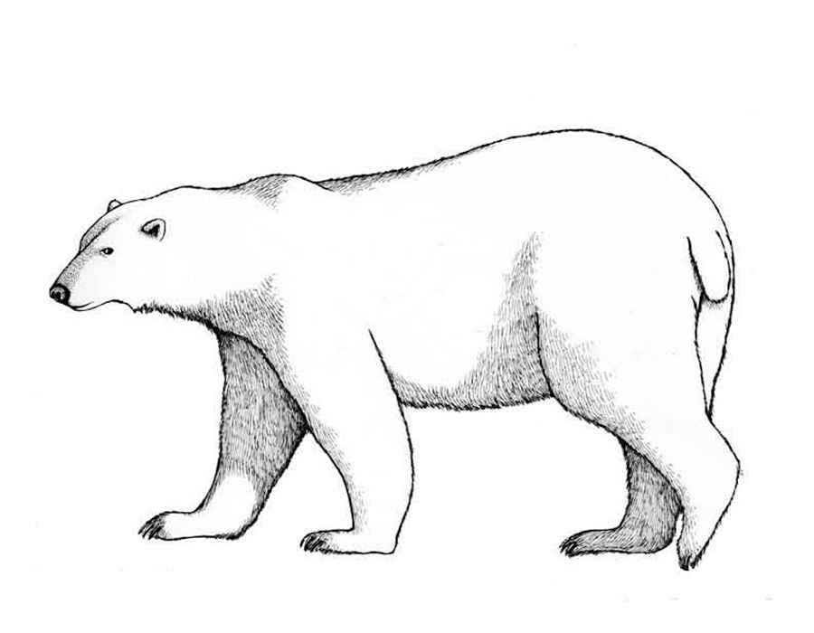
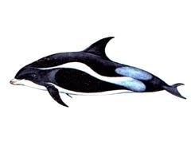
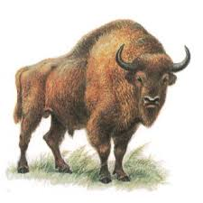
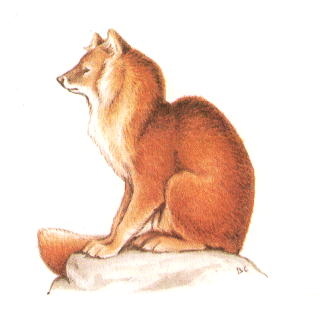

Белый медведь
Белый медведь — самый крупный представитель семейства медвежьих и отряда хищных. Он
занесен в Международную Красную книгу и в Красную Книгу России. Медленное размножение и большая
смертность молодняка делают этого зверя легко уязвимым. На территории России насчитывается 5—7 тысяч
белых медведей, причём ежегодный браконьерский отстрел составляет от 150 до 200 особей. В связи с
уменьшением численности населения Диксона истребление белого медведя незначительно сокращается.
В 2013 году численность популяции белых медведей в России оценивалась в 5—6 тысяч особей. После 2018
года планируется провести сплошной учёт белых медведей в России.

Беломордый дельфин
Известный также как «слизнеголов», оранжевый хоплостет обитает у берегов Новой Зеландии,
Австралии, Намибии и в северо-восточной части Атлантического океана. Его продолжительность жизни
достигает 149 лет, а половая зрелость наступает в возрасте от 20 до 32 лет.
Причиной истребления этого вида является все тот же чрезмерный вылов. Проблема усугубляется еще
тем,
что рыбаки тралят хоплостетов, когда они скапливаются на кормежку и размножение.

Зубр
Зубр, или европейский зубр (лат. Bison bonasus), — вид животных рода бизонов (Bison)
подсемейства бычьих (Bovinae) семейства полорогих (Bovidae) отряда парнокопытных
(Artiodactyla). Редкий вид, восстанавливающий свою численность в некоторых местах прежнего ареала
при активной помощи человека. В России зубр был представлен двумя подвидами - европейским (В.
bonasus bonasus L., 1758) и кавказским (В. bonasus caucasicus Turkin et Satunin, 1904). Кавказский
подвид исчез, и в горных районах страны ведется работа по восстановлению вольных стад гибридной
формы - кавказско - беловежского зубра. Внесен в Красную книгу МСОП.

Красный волк
Красный волк, или горный волк, или гималайский волк (Cuon alpinus), также известный под названием
буанзу, относится к хищным млекопитающим из семейства Псовые. На сегодняшний день это единственный и
редкий вид, относящийся к роду Cuon, находящийся под угрозой полного исчезновения. Выявляются
районы, где сохранилась популяция красного волка. На таких территориях активно организуются
заказники с целью охраны хищника и диких животных, используемых им в качестве добычи. Проводимая
разъяснительная работа направлена на предотвращение случайного отстрела исчезающего вида. Точные
данные о существующей в настоящее время численности красного волка отсутствуют.